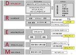
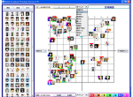
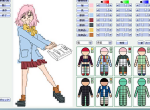
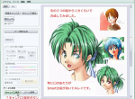
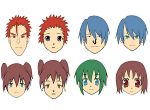
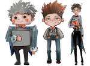
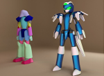
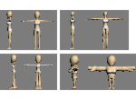

Character Making
Introduction to My Research Papers
This page introduces research related to character making. The research covers the overall character-making process, literal materials for character design, digital scrapbooks for collecting character information, collage systems for creating original character design concepts, deformation methods for faces, eyes, and body shapes, silhouette-based design, design simulation using 3D parts, and color scheme simulation.
DREAM Process for Character Making
キャラクターメイキングのためのDREAM手法

The purpose of this research is to improve the quality and efficiency of character making, which is an important stage in preparation for visual content production. To prevent communication gaps between producers and designers regarding design intentions, we proposed the DREAM process for character making and developed related support systems.
- 金子満 ,近藤邦雄, キャラクターメイキングの黄金則,ボーンデジタル,2010.10
- Mitsuru Kaneko, Kunio KONDO, Koji Mikami, Naoki Okamoto, Takahiro Tsuchida, Digital Character Making, Workshop, ACM SIGGRAPH Asia,2009.12
- Takahiro Tsuchida, Ryuta Motegi, Naoki Okamoto, Koji Mikami, Kunio Kondo Mitsuru Kaneko, Character Development Support Tool for DREAM Process, Asia Digital Art and Design Association, International Journal of Asia Digital Art and Design Association,Vol.16, pp.4-12, 2013.4
- 金子満，近藤邦雄，岡本直樹，三上浩司, 創作テンプレートを用いたディジタルキャラクターメイキング手法の提案, 第8回NICOGRAPH春季大会論文&アート部門コンテスト,2009
- 金子満，近藤邦雄，岡本直樹，三上浩司, 映像コンテンツ制作のためのディジタルキャラクターメイキング教育, 第8回NICOGRAPH春季大会論文&アート部門コンテスト,2009
- 神谷一臣,菅野大介,金子満,三上浩司, 近藤邦雄,搭乗型ロボットアニメのシナリオ作成テンプレートの提案, 芸術科学会,NICOGRAPH2009春季大会ポスター発表, 2009.3
- 土田 隆裕,茂木 龍太,岡本 直樹,伊藤彰教,三上 浩司,近藤 邦雄,金子 満,リテラル資料を利用したキャラクターデザインエンジンの開発,第25回NICOGRAPH論文コンテスト,芸術科学会, DVD,2009.10
- 土田隆裕,茂木龍太,岡本直樹,伊藤彰教,三上浩司,近藤邦雄,金子満,キャラクターメイキングのためのキャラクター評価システムの提案,芸術科学会,第26回NICOGRAPH論文コンテスト論文集, [P07] ,2010.9
- 茂木龍太,菅野太介,三上浩司,近藤邦雄, 既存キャラクター分析に基づく映像コンテンツ原案制作手法の提案,日本図学会, 2012年度秋季大会講演論文集,2012.12
Digital Scrapbook
キャラクターデザインのためのスクラップブック

This research developed digital scrapbook methods for collecting, organizing, and using character design references. The goal was to support the creation of character design concepts by allowing creators to register, retrieve, and reuse character-related visual materials.
- 茂木龍太, 松本諒一, 岡本直樹,近藤邦雄,金子満,キャラクタデザイン支援におけるディジタルスクラップブックの提案 , 日本図学会, 2008年度日本図学会大会講演論文集, 2008.5
- 高橋 佳弘,岡本直樹,茂木龍太, 三上浩司,近藤邦雄,金子満,[P02] ディジタルスクラップブックのためのキャラクター画像登録手法芸術科学会,NICOGRAPH2009春季大会ポスター発表, 2009.3
- 土田 隆裕,岡本直樹,茂木龍太, 三上浩司,近藤邦雄,金子満,ディジタルスクラップブックのためのキャラクター画像検索手法 , 芸術科学会, NICOGRAPH2009春季大会ポスター発表, 2009.3
- 茂木 龍太,岡本 直樹,高橋 佳弘,土田 隆裕,渡辺 賢悟,三上 浩司,近藤 邦雄,金子 満,ディジタルスクラップブックを用いたキャラクターデザイン原案制作システム, 日本図学会,2009年度日本図学会大会講演論文集, pp.50-55, 2009.5
Color Scheme for Character Making
キャラクターメイキングのための配色

This research supports color design in character making. It includes color scheme support systems, color simulation using character setting information, and automatic extraction methods for character image colors.
(1) キャラクター配色支援手法
- Ryuta MOTEGI, Yoshihisa KANEMATSU, Takahiro TSUCHIDA, Koji MIKAMI, Kunio KONDO,COLOR SCHEME SCRAPBOOK USING A CHARACTER COLOR PALETTE TEMPLATE, International Society on Geometry and Graphics,pp.167-174,2014.
- 城戸宏之,岡本直樹,茂木龍太, 三上浩司,近藤邦雄,金子満,キャラクターデザインのための配色支援システム構築, 芸術科学会,NICOGRAPH2009 春季大会ポスター発表, 2009.3
- 城戸宏之,岡本直樹,茂木龍太, 三上浩司,近藤邦雄,金子満,キャラクターデザインのための配色支援システム構築, 日本図学会,2009年度日本図学会大会講演論文集, pp.117-122,2009.5
- 城戸 宏之, 岡本 直樹,茂木 龍太,三上 浩司,近藤 邦雄,金子 満,キャラクターデザインのための配色支援システム構築, 画像電子学会･情報処理学会合同,VCシンポジウム, DVD,2009.6
(2) キャラクター設定情報を用いた配色シミュレーション
- 茂木龍太,兼松祥央,土田隆裕,三上浩司,近藤邦雄, キャラクター設定情報を用いた配色デザイン支援手法,日本図学会, 2014年度春季大会（福岡）学術講演論集,pp.125-128, 2014.5
- 小池雄太,兼松祥央,茂木龍太,三上浩司,近藤邦雄, キャラクター設定情報データベースを用いた配色シミュレーションシステム, 映像情報メディア学会・画像電子学会・芸術科学会,映像表現・芸術科学フォーラム,2014.3
- 茂木 龍太, 小池 雄太, 兼松 祥央 , 土田 隆裕, 三上 浩司, 近藤 邦雄, 配色支援システムを用いたキャラクターデザイン手法の提案,Visual Computing /グラフィクスと CAD合同シンポジウム 2014,ポスター発表43, 2014.6
- 花田悠哉,茂木龍太,三上浩司,近藤邦雄, キャラクター設定資料に基づく配色と役割の調査分析, 日本図学会, 2012年度春季大会学術講演論集,2012.5
(3) キャラクター配色の自動抽出手法
- 阿部公則, 茂木龍太,岡本直樹,三上浩司, 近藤邦雄,イメージカラー自動抽出手法を用いたアニメキャラクター配色シミュレーション,芸術科学会,第10回 NICOGRAPH2011春季大会論文コンテスト論文集,ポスター, 2011.3
- 阿部 公則,茂木 龍太,岡本 直樹,三上 浩司,近藤 邦雄,アニメキャラクター配色シミュレーションのためのイメージカラー自動抽出手法,画像電子学会/情報処理学会Visual Computing /グラフィクスと CAD 合同シンポジウム 2011予稿集,DVD,2011,6
Character Collage
キャラクターメイキングのコラージュ CharaCollage

This research applied long-term work supervised by Professor Shinichiro Miyaoka in the Image Media Project to the field of character making. The developed software has both Japanese and English versions and has been widely used in seminars in Japan and overseas.
- 渡邉 賢悟, 伊藤 和弥,茂木 龍太, 岡本 直樹,近藤 邦雄, 宮岡 伸一郎,Poisson Image Editingを用いたキャラクタコラージュシステムの開発,第25回NICOGRAPH論文コンテスト,芸術科学会, DVD,2009.10
- 渡邉賢悟,伊藤和弥,近藤邦雄,宮岡伸一郎,Poisson Image Editingを用いたキャラクタコラージュシステムの開発,芸術科学会,芸術科学会論文誌,Vol.9, No.2,pp.58-65,2010.6
Doctoral Dissertation
渡邉 賢悟, ビジュアル表現のための画像メディアツールの構築 ，2014，博士（メディアサイエンス）
In addition to this research area, related studies on image media were highly evaluated both practically and academically, and the dissertation was selected as a research-group-recommended doctoral dissertation by the Information Processing Society of Japan.
Character Face Design
キャラクターの顔、目などのデザイン支援システム

This research supports character face design, including the design of eyes, facial parts, part balance, and 3D character head models.
(1) 2次元CGによる顔、目のデザインシステム
- 大前美矢,岡本直樹,茂木龍太, 三上浩司,近藤邦雄,金子満,キャラクターデザインのための目形状の創作支援システムの構築 , 芸術科学会, NICOGRAPH2009春季大会ポスター発表, 2009.3
- 坂井和城,岡本直樹,茂木龍太, 三上浩司,近藤邦雄,金子満,パーツバランス変換によるキャラクター顔創作支援システムの開発 , 芸術科学会, NICOGRAPH2009春季大会ポスター発表, 2009.3
- 坂井和城,岡本直樹,茂木龍太, 三上浩司,近藤邦雄,金子満,パーツバランス変換によるキャラクター顔創作支援システムの開発, 日本図学会,2009年度日本図学会大会講演論集, pp.56-61,2009.5
- 津田健,茂木龍太,三上浩司,近藤邦雄, 曲線描画を用いたキャラクターの顔原案作成システムの開発, 日本図学会, 2012年度春季大会学術講演論集,2012.5
(2) 3次元CGによるキャラクター頭部制作システム
- 須田智之,茂木龍太,兼松祥央,三上浩司,近藤邦雄,アニメキャラクターの頭部のデザイン原案制作支援システムの開発, 画像電子学会,芸術科学会,映像情報メディア学会,映像表現・芸術科学フォーラム2013,2013.3
- 若松勇太,兼松祥央,茂木龍太,三上浩司,近藤邦雄,アニメキャラクターのためのヘアーメイキングシステムの開発, 映像情報メディア学会・画像電子学会・芸術科学会,映像表現・芸術科学フォーラム,2014.3
Character's Facial Expression
キャラクターの表情制御
This research supports the production of anime character facial expressions and collaborative tools for facial-expression creation using scrapbook-based methods.
- 劉苗苗,三上浩司,近藤邦雄,茂木龍太,伊藤彰教,王翰慶,岡本直樹,A Research on Character's Facial Expression in Anime Production, 情報処理学会,第50回全国大会, DVD,2010.3
- 劉苗苗,伊藤彰教,三上浩司,近藤邦雄,金子満,スクラップブックを用いたキャラクターの表情制作手法に関する研究, 芸術科学会,NICOGRAPH 春季大会, DVD,2010.3
- Liu Miao Miao, Ryuta Motegi, Naoki Okamoto,Akinori Ito, Koji Mikami,Kunio Kondo, Wang Han Qing,A Research on Collaborative Tool to Support Production of Anime Character’s Facial Expression in Anime Production,proc. of International Workshop on Advanced Image Technology (IWAIT) ,Institute of Electronics, Information and Communication Engineers (IEICE), Japan Institute of Image Information and Television Engineers (ITE), Japan ,DVD,2010.1
Stylized Character Design Support Method Using Silhouette
シルエットを利用したキャラクター形状デザイン

This research explores character shape design support based on silhouette analysis. It aims to help designers find meaningful shape characteristics within character silhouettes.
- Rianti Hidayat, Akinori Ito, Kengo Watanabe, Koji Mikami, Kunio Kondo, Find a meaning within character silhouette: Stylized character design support method using silhouette, NICOGRAPH International 2012, 2012
- ヒダヤト リアンティ, 近藤邦雄, 三上浩司, 伊藤彰教, 渡邊賢悟, キャラクターシルエットの分析に基づくキャラクター形状のデザイン支援手法 ,映像表現・芸術科学フォーラム, pp.57-60, 2012.3
Robot Design Using 3D Parts
3次元パーツを利用したロボットデザイン

This research supports the design of human-operated robots by using 3D parts, collage techniques, chamfering rules, and simulation systems for humanoid robot design.
- 冨永 浩章, Saha Jirayudul, 岡本 直樹, 三上 浩司, 近藤 邦雄,3次元パーツのコラージュによる人間搭乗型ロボットのデザイン原案制作手法 ,画像電子学会,情報処理学会,Visual Computingシンポジウム,2010.6
- ジラーユデュン サハ,近藤 邦雄,三上 浩司,伊藤 彰教,渡邉 賢悟, 人型ロボットパーツの面取りルールベースの提案,芸術科学会,NICOGRAPH秋季大会ポスター発表,2011.9
- 辻 翔太, 茂木 龍太，兼松 祥央，三上 浩司，近藤 邦雄, 3Dパーツを用いた人型ロボットデザインのシミュレーションシステムの開発,芸術科学会NICOGRAPH2014,poster, 2014
Deform Character Design
デフォルメキャラクターのデザイン支援手法

This research supports the creation of deformed characters, including character design using deformation templates and production methods for two-head-high characters.
(1) デフォルメキャラクター制作
- 田中希,岡本直樹,茂木龍太,近藤邦雄,三上浩司,デフォルメテンプレートを用いた飛行機キャラクター制作のためのデザイン原案作成支援手法, 日本図学会,図学研究,第46巻, 第1号,pp.11-20, 2012.3
- 工藤菜央,岡本直樹,茂木龍太,松島渉,三上浩司,近藤邦雄,動物をモチーフにしたデフォルメキャラクターのデザイン原案作成支援システムの開発, 情報処理学会,第50回全国大会, DVD,2010.3
- 田中希,岡本直樹,茂木龍太,近藤邦雄,三上浩司,金子満,飛行機キャラクター制作のためのデフォルメテンプレートを用いたデザイン原案作成支援手法,日本図学会,2010年度日本図学会秋季大会講演論集,2010.11
- 田中希,岡本直樹,茂木龍太,松島渉,近藤邦雄,三上浩司,金子満,飛行機をモチーフにしたデフォルメキャラクターのデザイン原案作成支援システムの開発, 情報処理学会,第50回全国大会, DVD,2010.3
- 田中 希, 茂木龍太, 三上浩司, 近藤邦雄, 変形テンプレートを用いたデフォルメキャラクターのデザイン原案作成支援システムの開発, 映像表現・芸術科学フォーラム,pp.61-64,2012.3
(2) 2頭身キャラクターの制作
- 村瀬 健,茂木龍太,兼松祥央,三上浩司,近藤邦雄, 3次元デフォルメ手法を用いた2頭身キャラクターの制作, 映像情報メディア学会・画像電子学会・芸術科学会,映像表現・芸術科学フォーラム,2014.3
Design Method of Municipal Mascot
自治体マスコットキャラクターのデザイン
This research proposed a method for creating original design concepts for municipal mascot characters. Existing mascot characters were analyzed, necessary parts were organized, and local characteristics were selected as design elements. Based on setting materials, the method supports the selection and combination of parts to create mascot character design concepts.
- 牛嶋大悟,茂木龍太,岡本直樹,三上浩司,近藤邦雄,自治体マスコットキャラクターのデザイン原案作成支援手法の提案,芸術科学会,第10回 NICOGRAPH2011春季大会論文コンテスト論文集, ポスター,2011.3
- 牛島大悟,茂木龍太,岡本直樹,三上浩司,近藤邦雄,自治体マスコットキャラクターのデザイン原案作成支援手法の提案,日本図学会,2011年度春季大会講演論集,セッション3-10,2011.5